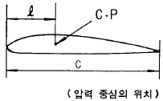
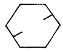
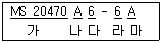
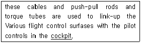
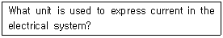
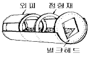

항공기체정비기능사 (2003-03-30 기출문제)
1과목: 비행원리
1. 제트기관을 장비하고 최초비행에 성공한 것은 언제인가?
- 1924년 8월
- 1930년 8월
- 1939년 8월
- 1941년 8월
(정답률: 64%)

2. 마하수의 정의에 대하여 가장 올바르게 설명한 것은?
- 음속이 증가하면 증가한다.
- 음속을 비행체 속도로 나눈 값이다.
- 비행체의 속도가 증가하면 증가한다.
- 음속과 비행체의 속도에 비례한다.
(정답률: 65%)
3. 그림은 압력중심의 위치를 나타낸 것이다. 압력중심에 대한 설명으로 틀린 것은?

- 압력중심(C· P)=C/ℓ 로 표시한다.
- 보통의 날개에서 받음각이 클 때 압력중심은 앞으로 이동한다.
- 압력중심의 이동이 크다는 것은 비행기의 안전성에 좋지 않다.
- 압력중심은 양항력의 합성력이 작용하는 점이다.
(정답률: 62%)
4. 비행기의 무게 8,000㎏, 날개면적 50m2, 최대양력계수 1.5일때 실속속도는 몇 m/sec 인가? (단, 공기의 밀도는 0.125 ㎏· sec2/m4이다.)
- 32
- 41
- 54
- 62
(정답률: 51%)
5. 날개길이 방향의 양력계수 분포가 일률적이고 유도항력이 최소인 날개는?
- 앞젖힘 날개
- 뒤젖힘 날개
- 타원날개
- 테이퍼 날개
(정답률: 66%)
6. 비행기에 작용하는 항력이 아닌 것은?
- 추력항력
- 마찰항력
- 유도항력
- 조파항력
(정답률: 73%)
7. 평형상태로 부터 벗어난 뒤에 다시 평형상태로 되돌아 가려는 초기의 경향은?
- 가로안정
- 세로안정
- 정적안정
- 동적안정
(정답률: 80%)
8. 마하 트리머(mach trimmer) 또는 피치트림 보상기를 설치 함으로써 자동적으로 수정할 수 있는 현상은?
- 버페팅(buffeting)
- 드래그 슈트(drag chute)
- 피치 업(pitch up)
- 턱 언더(tuck under)
(정답률: 49%)
9. 직렬식 회전날개 헬리콥터의 단점인 것은?
- 무거운 물체 운반에 부적합하다.
- 가로 안정성이 나쁘다.
- 기체의 폭이 작다.
- 구조가 간단하다.
(정답률: 72%)
10. 헬리콥터의 무게가 950㎏, 회전 날개의 반지름이 3m 일때의 원판 하중은 몇[kg/m2] 인가? (단, π = 3.14 )
- 33.6
- 35.2
- 37.4
- 39.1
(정답률: 53%)
11. 비행기가 수평등속비행을 할 때 힘의 평형 관계식으로 가장 올바른 것은? (단, L = 양력, W = 비행기의 무게, D = 항력)
- L = W
- L > W
- L < W
- L = D
(정답률: 75%)
12. 조종면을 조작하기위한 조종력과 가장 관계가 먼 것은?
- 조종면의 폭
- 조종면의 평균 시위
- 비행기의 속도
- 조종면의 표면상태
(정답률: 68%)
13. 공기가 도관을 통하여 흐르고 있다.단면적 0.5 m2인 지점 통과시 흐름의 속도가 4 m/s인 경우, 단면적 1 m2인 지점 통과시 흐름의 속도는 얼마가 되겠는가? (단, 압축성의 영향은 무시한다.)
- 1 m/s
- 2 m/s
- 8 m/s
- 16 m/s
(정답률: 64%)
14. 공기보다 가벼운 항공기(Lighter-than-air aircraft)에 속하는 것은?
- 글라이더
- 비행기
- 회전날개항공기
- 비행선
(정답률: 63%)
15. 초음속 날개골에서 날개의 앞전을 뾰족하게 한다.그 이유를 가장 올바르게 설명한 것은?
- 충격파를 발생시키기 위해
- 양력을 증가시킬 목적으로
- 충격파의 강도를 약화시키기 위해
- 항력을 증가시킬 목적으로
(정답률: 73%)
16. 시한성 정비를 영어로 옳게 표시한 항은?
- on condition maintenance
- condition monitoring maintenance
- age sampling maintenance
- hard time maintenance
(정답률: 81%)
17. 항공기 정비에서 창정비와 같은 것은?
- A 점검
- B 점검
- C 점검
- D 점검
(정답률: 51%)
18. 해머(Hammer)와 같은 목적으로 사용되며,타격부위에 변형을 주지 않아야 할 가벼운 작업에 사용되는 공구는?
- 탭(tap)
- 맬릿(Mallet)
- 텅(Tong)
- 스패너(Spanner)
(정답률: 78%)
19. 쇠톱을 이용하여 절단작업을 할 때 안전 및 유의사항으로 가장 관계가 먼 것은?
- 톱날이 일감 표면에서 미끄러지지 않도록 한다.
- 쇠톱을 취급할 때는 톱니에 손이 다치지 않도록 한다.
- 쇠톱을 보관할 때는 다른 공구와 분리하여 보관한다.
- 재료가 잘라질 때는 약간 힘을 주어 톱날의 파손이 되지 않도록 유의한다.
(정답률: 75%)
20. 그림의 항공기용 볼트에 관한 설명중 가장 적당한 것은?

- 알루미늄 합금볼트
- 부식방지용 볼트
- 저강도 볼트
- 재가공 볼트
(정답률: 76%)
2과목: 항공기정비
21. 굴곡작업에 관한 내용으로 가장 관계가 먼 것은?
- 작업표시는 유성펜을 사용한다.
- 굴곡부에 생기는 신축등 광혹한 조건을 받는곳에는 판의 그레인(Grain)방향에 일치시키는것이 좋다.
- 성형점(Mold point)은 접어 구부러진 재료의 안쪽에서 연장한 직선의 교점이다.
- 릴리프 홀(Relief Hole)의 위치는 릴리프 홀의 바깥 주위가 적어도 안쪽 굴곡 접선의 교차부분에 접해 있어야 한다.
(정답률: 48%)
22. 아래 리벳의 규격을 설명한 내용으로 가장 올바른 것은?

- 가는 유니버설 머리 리벳을 표시
- 나는 표면처리 상태를 표시
- 다는 리벳의 지름을 표시 (6/16인치)
- 라는 2117 재질을 표시
(정답률: 42%)
23. 육안검사시 사용되는 보어스코프 중 거꾸로 비추어 뒤쪽을 볼 수 있는 것은?
- Direct-Vision Borescope
- Right Angle Borescope
- Retro Spective Borescope
- Foroblique Borescope
(정답률: 60%)
24. 자분탐상검사에 대한 설명 내용중 가장 올바른 것은?
- 미세한 균열검사에는 건식자분이 좋다.
- 비자성체에도 적용 가능하다.
- 탈자는 반드시 교류를 이용한다.
- 검사전 시험편 표면의 기름, 도료, 녹을 제거한다.
(정답률: 68%)
25. 항공기의 연료급유와 배유작업 및 항공기의 정비작업 중 반드시 하여야 할 사항은?
- 청소를 하여야 한다.
- 방화책임자의 지시를 받아야 한다.
- 접지(Ground)를 해야 한다.
- 공항관제 소장의 허가를 받아야 한다.
(정답률: 85%)
26. 소화기의 용도가 틀리게 연결된 것은?
- 물펌프 소화기; A급 화재진화에 사용한다.
- 이산화탄소 소화기(CO2소화기); B,C급 화재진화에 사용한다.
- 포말 소화기; A급 화재진화에 사용한다.
- 분말 소화기; B,C급 화재진화에 사용한다.
(정답률: 65%)
27. 계기계통의 배관을 식별하기 위해 일정한 간격을 두고 색깔로 구분된 테이프를 감아두는데, 이때 붉은색은 어떤 계통의 배관을 나타내는가?
- 윤활계통
- 압축공기계통
- 연료계통
- 화재방지계통
(정답률: 50%)
28. 항공기의 세척방법중 솔벤트 세척에 관한 내용으로 가장 적당한 것은?
- 건식 세척용 솔벤트는 주로 산소 계통에 사용된다.
- 솔벤트세척은 더운 날씨에 주로 사용된다.
- 솔벤트세척은 플라스틱 표면이나 고무제품에 주로 사용된다.
- 솔벤트세척은 오염이 심하여 알카리 세척법으로는 불가능할 경우 사용된다.
(정답률: 61%)
29. 다음 문장 중 밑줄친 부분의 뜻으로 알맞는 것은 ?

- 조종면
- 조종실
- 바닥깔개
- 조정간
(정답률: 68%)
30. 다음 문장이 뜻하는 것은?

- volt
- Ampere
- ohm
- watt
(정답률: 64%)
31. 측정물의 평면의 상태검사,원통의 진원검사 등에 이용되는 측정기기는?
- 버니어 캘리퍼스
- 다이얼 게이지
- 마이크로 미터
- 깊이 게이지
(정답률: 64%)
32. 초음파 검사의 특징 중 틀린 내용은?
- 검사시 소모품이 들어가지 않아 비용이 싸다.
- 검사 대상물이 한쪽면만 노출되어도 검사가 가능하다.
- 검사시 위해요소가 없다.
- 판독이 주관적이다.
(정답률: 55%)
33. 렌치의 개구 부분의 크기를 조절하며 웜과 래크로 바꿀 수 있는 렌치는?
- 박스 렌치
- 조합 렌치
- 소켓 렌치
- 조절 렌치
(정답률: 64%)
34. 잭 작업 내용으로 틀리는 것은?
- 단단하고 평평한 장소에서 최대 허용풍속 24km/h 이하에서 잭을 설치
- 정해진 위치에 잭 패드를 부착하고 잭을 설치
- 잭을 설치 전에 필요한 고정장치와 안전장치를 설치
- 잭 Down시 L/G Down Lock를 풀어 놓아야 한다.
(정답률: 63%)
35. 항공기나 장비 및 부품에 대한 원래의 설계를 변경하거나 새로운 부품을 추가로 장착시킬 때 실시하는 작업에 해당되는 것은?
- 항공기 소수리
- 항공기 개조
- 항공기 대수리
- 항공기 보수
(정답률: 84%)
36. 올레오 완충장치에서 완충장치안에 있는 피스톤이 회전하지 않도록 하기위해 마련된 기구로서 바퀴를 정열시켜 타이어의 마모를 줄이기 위한 장치는?
- 토큐링크(Torque Link)
- 래치장치(Latch Mechanism)
- 번지 케이블(Bungee cable)
- 항력지주(Drag Link)
(정답률: 60%)
37. WING(날개)을 이루고있는 FRONT SPAR, REAR SPAR 및 양쪽 끝의 RIB사이의 공간을 연료탱크로 사용되며,연료의 누설을 방지하기위하여 모든 연결부는 특수 실런트로 SEALING 되여있다. 이러한 연료탱크를 무슨 탱크라 하는가?
- INTEGRAL FUEL TANK
- BLADDER TYPE FUEL CELL TANK
- RESERVE TANK
- VENT SURGE TANK
(정답률: 64%)
38. 그림과 같은 동체구조를 무엇이라 하는가?

- 트러스트형
- 모노코크형
- 세미모노코크형
- 샌드위치형
(정답률: 80%)
39. 페일세이프 구조(Failsafe Structure)의 형식이 아닌 것은?
- 다경로 하중구조
- 응력 외피구조
- 하중 경감구조
- 대치구조
(정답률: 72%)
40. 재료의 전연성을 이용한 가공법은?
- 주조
- 용접
- 압연
- 연삭
(정답률: 66%)
3과목: 항공기체
41. SAE(Society Of Automotive Engineers)의 강(鋼)의 분류에서 4130은 무엇을 뜻하는가?
- 탄소 30%와 몰리브덴(Mo) 1%를 함유한 크롬강이다.
- 탄소 130%와 몰리브덴(Mo) 1%를 함유한 몰리브덴(Mo)강이다.
- 탄소 0.30%와 몰리브덴(Mo) 1%를 함유한 몰리브덴(Mo)강이다.
- 규소 0.30%와 몰리브덴(Mo) 4%를 함유한 탄소강이다.
(정답률: 72%)
42. 천연고무의 단점을 개선하여 사용되는 인조고무의 종류가 아닌 것은?
- 부틸
- 부나
- 네오프렌
- 폴리에틸렌
(정답률: 65%)
43. 알루미늄의 부식방지를 위해 표면처리 방식으로 표면에 산화피막을 형성시켜 부식에 대한 저항을 증가시키고 페인트하기 좋은 표면을 만들 때 쓰는 표면처리 방식은?
- 도금(plating)
- 양극 산화처리(Anodizing)
- 파아커라이징(Parkerizing)
- 밴더라이징(Banderizing)
(정답률: 66%)
44. 미국규격협회(ASTM)에서 정한 질별기호 중 풀림처리를 나타낸 것은?
- O
- H
- F
- W
(정답률: 72%)
45. 수송기에 무게가 4500㎏인 기관을 중심으로부터 900㎝되는 곳에 장착하는 경우, 이로 인하여 생기는 중심에서의 모멘트는 얼마인가?
- 500㎏·m
- 2,025,000㎏·㎝
- 81,000㎏·m
- 4,⑤0,000㎏·㎝
(정답률: 65%)
46. 헬리콥터의 기체구조 부분중 동체에 위치하지 않는 것은?
- 파일론
- 조종실
- 기관실
- 연료 및 오일탱크
(정답률: 68%)
47. 헬리콥터의 주회전날개의 정적평형에 대한 설명중 가장 관계가 먼 것은?
- 정적평형작업은 동적평형작업전에 반드시 실시해야 한다.
- 크고 복잡한 것은 헤드와 깃을 분리하여 평형작업을 한다.
- 길이방향의 평형을 시위방향의 평형보다 먼저 실시 한다.
- 주회전날개의 형식에 따라 평형장비도 달라진다.
(정답률: 43%)
48. 헬리콥터의 착륙장치중 스키드 기어(Skid gear)형의 특징으로 가장 관계가 먼 것은?
- 구조가 간단하다.
- 정비가 용이하다.
- 대형 헬리콥터에 주로 사용된다.
- 지상운전과 취급에 불리하다.
(정답률: 68%)
49. 잔류변형 발생 유무를 확인하기 위한 시험은?
- 극한하중시험
- 한계하중시험
- 강성시험
- 파괴시험
(정답률: 40%)
50. 작은 구멍에 대한 응력집중계수를 올바르게 나타낸 식은? (단, σmax : 최대응력, σo : 평균응력, σmin : 최소응력, K : 응력집중계수)
- K = σmin/σo
- K = σmax/σmin
- K = σmax/σo
- K = σmin/σmax
(정답률: 35%)
51. 후크의 법칙(Hooke's Law)이 적용 가능한 범위는?
- 인장강도 이내
- 항복응력 이내
- 비례한도 이내
- 소성영역 이내
(정답률: 46%)
52. 리벳(rivet)이나 볼트(bolt)의 단면에 서로 미끄러지려는 힘은?
- 인장력
- 압축력
- 전단력
- 비틀림
(정답률: 52%)
53. 다음은 조종계통 정비에 대한 설명이다. 틀린 것은?
- 케이블 손상의 주원인은 풀리나 페어리드 및 케이블 드럼과의 접촉에 의한 것이다.
- 케이블 손상은 헝겊을 케이블에 감고 길이 방향으로 움직여 보아 알 수 있다.
- 부식된 케이블은 브러쉬로 부식을 제거한후 솔벤트 등으로 깨끗이 세척한다.
- 케이블 장력은 장력계수의 눈금에 장력환산표를 대조하여 산출한다.
(정답률: 63%)
54. 항공기 타이어의 숄더(Shoulder)부위에서 지나치게 마모가 나타나는 경우로 가장 올바른 것은?
- 과도한 팽창
- 한계이상의 토인(Toe-in)
- 부족한 팽창
- 택싱에서의 빠른회전
(정답률: 49%)
55. 날개골(Airfoil)형태를 만들기 위한 구조부재는?
- 날개보(Spar)
- 론저론(Longeron)
- 리브(Rib)
- 스트링저(Stringer)
(정답률: 67%)
56. 세장비(Slenderness ratio)에 관한 설명 내용으로 가장 올바른 것은?
- 기둥의 길이를 단면의 회전 반지름으로 나눈비와 관련이 있다.
- 세장비가 작은 봉은 좌굴강도에 의하여 파괴된다.
- 세장비가 150보다 크면 짧은 기둥이라고 한다.
- 세장비가 90보다 크면 짧은 기둥이라고 한다.
(정답률: 50%)
57. 헬리콥터에서 수직 휜(vertical fin)에 대한 설명중 틀린 것은?
- 전진비행시 수평을 유지시킨다.
- 회전날개에서 발생하는 토크를 상쇄시키는데 기여 한다.
- 날개골의 형태는 비대칭 구조로 되어있다.
- 수직핀은 테일붐에 볼트로 장착되어 있다.
(정답률: 37%)
58. 헬리콥터의 기체에 작용하는 하중이 아닌 것은?
- 장력
- 무게
- 추력
- 항력
(정답률: 72%)
59. 기체구조에 부착되는 벌집구조부의 알루미늄 코어의 손상시 대체용으로 자주 쓰이는 벌집구조부 코어의 재질은?
- 마그네슘
- 스테인레스강
- 티타늄
- 유리섬유
(정답률: 46%)
60. 힘(force)은 벡터양으로 표시되는데 다음 중에서 가장 관계가 먼 것은?
- 속도
- 크기
- 방향
- 작용점
(정답률: 56%)